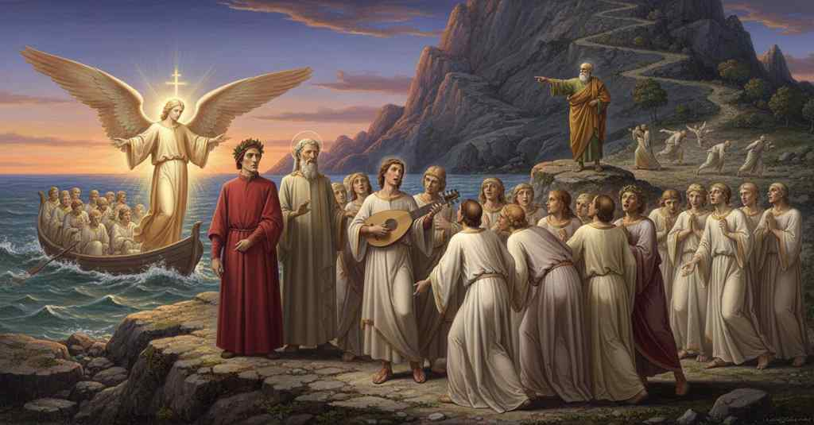

Purgatorio — Canto 2

All’alba un angelo conduce al Purgatorio le anime, tra cui Casella, che canta per Dante finché Catone rimprovera tutti e li sprona a correre verso il monte. At dawn an angel brings souls, including Casella, to Purgatory; he sings for Dante until Cato rebukes everyone and urges them to run toward the mountain. 夜明けに天使がカセッラを含む魂たちを煉獄へ導き、彼がダンテのために歌うが、やがてカトーが皆を叱責して山へ走るよう促す。
1
Già era ’l sole a l’orizzonte giunto
The sun had already reached the horizon
太陽はすでに地平線に達していた、
2
lo cui meridïan cerchio coverchia
whose meridian circle covers
その子午線の円は覆っている
3
Ierusalèm col suo più alto punto;
Jerusalem at its highest point;
エルサレムをその最高点において。
4
e la notte, che opposita a lui cerchia,
and the night, which circles opposite to him,
そして夜は、彼と対極に巡り、
5
uscia di Gange fuor con le Bilance,
was issuing forth from the Ganges with the Scales,
ガンジス川から天秤座とともに現れ、
6
che le caggion di man quando soverchia;
which fall from her hand when she overcomes;
それは（天秤座は）彼女（夜）が（昼に）勝る時、手から落ちる。
7
sì che le bianche e le vermiglie guance,
so that the white and vermilion cheeks,
そのため、白くそして赤い頬は、
8
là dov’ i’ era, de la bella Aurora
there where I was, of the beautiful Aurora
私がいた場所では、美しきアウロラの、
9
per troppa etate divenivan rance.
were turning orange through too much age.
時が経ちすぎて、橙色に変わっていた。
10
Noi eravam lunghesso mare ancora,
We were still alongside the sea,
我々はなおも海辺にいた、
11
come gente che pensa a suo cammino,
like people who think of their journey,
己の道行きを思う人々のように、
12
che va col cuore e col corpo dimora.
who go with the heart and with the body linger.
心は進み、体は留まる。
13
Ed ecco, qual, sorpreso dal mattino,
And behold, just as, surprised by morning,
そして見よ、あたかも、朝に不意を打たれ、
14
per li grossi vapor Marte rosseggia
through the thick vapors Mars glows red
濃い水蒸気のために火星が赤らむように
15
giù nel ponente sovra ’l suol marino,
down in the west over the sea’s floor,
西の低きに、海面の上で、
16
cotal m’apparve, s’io ancor lo veggia,
such appeared to me, so may I see it again,
そのような光が私に現れた、願わくは再び見んことを、
17
un lume per lo mar venir sì ratto,
a light coming over the sea so swift
海を渡って来る一つの光はかくも速く、
18
che ’l muover suo nessun volar pareggia.
that its motion no flight could equal.
その動きにはいかなる飛翔も及ばない。
19
Dal qual com’ io un poco ebbi ritratto
From which when I had withdrawn a little
それから私が少し目を逸らし
20
l’occhio per domandar lo duca mio,
my eye to question my leader,
我が導き手に尋ねようとした時、
21
rividil più lucente e maggior fatto.
I saw it again, made more shining and larger.
再び見ると、それはより輝き、大きくなっていた。
22
Poi d’ogne lato ad esso m’appario
Then on each side of it appeared to me
次にその両側に私に現れたのは
23
un non sapeva che bianco, e di sotto
a what-I-knew-not-white, and from below
何とは知れぬ白いものであり、そしてその下から
24
a poco a poco un altro a lui uscìo.
little by little another came forth from it.
少しずつ、もう一つの白いものが現れた。
25
Lo mio maestro ancor non facea motto,
My master still made no utterance,
我が師はまだ言葉を発さなかった、
26
mentre che i primi bianchi apparver ali;
while the first white things appeared as wings;
最初の白いものが翼と現れるまでは。
27
allor che ben conobbe il galeotto,
then when he well recognized the boatman,
その時、彼は渡し守をはっきりと認め、
28
gridò: «Fa, fa che le ginocchia cali.
he cried: “Make, make your knees bend.
叫んだ、「さあ、さあ、膝を折りなさい。
29
Ecco l’angel di Dio: piega le mani;
Behold the angel of God: fold your hands;
見よ、神の御使いだ。手を組みたまえ。
30
omai vedrai di sì fatti officiali.
from now on you shall see such ministers.
今後はお前もこのような役人を見るだろう。
31
Vedi che sdegna li argomenti umani,
See how he scorns human instruments,
見よ、彼は人間の道具を軽んじ、
32
sì che remo non vuol, né altro velo
so that he wants no oar, nor other sail
櫂も欲せず、他の帆も
33
che l’ali sue, tra liti sì lontani.
than his own wings, between shores so distant.
彼の翼の他には、かくも遠い岸の間で。
34
Vedi come l’ha dritte verso ’l cielo,
See how he holds them straight toward the sky,
見よ、彼がそれ（翼）をいかに天に向けているか、
35
trattando l’aere con l’etterne penne,
plying the air with the eternal plumes,
永遠の羽で大気を打ち、
36
che non si mutan come mortal pelo».
which do not change like mortal hair.”
それは定命の者の羽毛のようには変わらない」。
37
Poi, come più e più verso noi venne
Then, as more and more toward us came
それから、ますます我らの方へと来た時
38
l’uccel divino, più chiaro appariva:
the divine bird, the brighter he appeared:
その神の鳥は、より鮮やかに見えた。
39
per che l’occhio da presso nol sostenne,
so that the eye close up could not sustain him,
そのため目は近くでそれに耐えられず、
40
ma chinail giuso; e quei sen venne a riva
but I bent it downward; and he came to shore
私はそれを下に向けた。そして彼は岸辺へと来た
41
con un vasello snelletto e leggero,
with a vessel so swift and so light,
俊敏で軽い小舟とともに、
42
tanto che l’acqua nulla ne ’nghiottiva.
that the water swallowed none of it.
水はそれを少しも飲み込まないほどに。
43
Da poppa stava il celestial nocchiero,
At the stern stood the celestial helmsman,
艫には天の操舵手が立っていた、
44
tal che faria beato pur descripto;
such that to be described would make one blessed;
その様は描くだけでも人を祝福するほど。
45
e più di cento spirti entro sediero.
and more than a hundred spirits sat within.
そして百以上の霊が中に座っていた。
46
‘In exitu Isräel de Aegypto’
“In exitu Isräel de Aegypto”
「イスラエルがエジプトを出でし時」
47
cantavan tutti insieme ad una voce
they all sang together with one voice
彼らは皆、声を一つにして歌っていた
48
con quanto di quel salmo è poscia scripto.
with all of that psalm that is written after.
その詩篇の後に記されたすべてを。
49
Poi fece il segno lor di santa croce;
Then he made for them the sign of the holy cross;
次に彼は彼らに聖なる十字の印をした。
50
ond’ ei si gittar tutti in su la piaggia:
at which they all cast themselves upon the beach:
それゆえ彼らは皆、浜辺に身を投じ、
51
ed el sen gì, come venne, veloce.
and he went away, as he had come, swift.
そして彼は、来た時と同じく、速やかに去って行った。
52
La turba che rimase lì, selvaggia
The throng that remained there, bewildered
そこにとどまった群れは、この土地に不慣れで
53
parea del loco, rimirando intorno
seemed by the place, gazing all around
あたりを見回す様子は、
54
come colui che nove cose assaggia.
like one who tries out new things.
新しい物事を試す者のようであった。
55
Da tutte parti saettava il giorno
From all sides the day was being shot by the sun,
四方から太陽は、昼の光を射ていた
56
lo sol, ch’avea con le saette conte
which with its ready arrows had
その巧みな矢をもって
57
di mezzo ’l ciel cacciato Capricorno,
chased Capricorn from the midst of the sky,
天の中央からカプリコルノを追い払い、
58
quando la nova gente alzò la fronte
when the new people raised their foreheads
その時、新参の者たちは顔を上げ
59
ver’ noi, dicendo a noi: «Se voi sapete,
toward us, saying to us: “If you know,
我らに向かい、言った。「もしご存知なら、
60
mostratene la via di gire al monte».
show us the way to go to the mountain.”
山へ登る道を我らにお示しください」。
61
E Virgilio rispuose: «Voi credete
And Virgil answered: “You believe
そしてウェルギリウスは答えた。「あなた方はおそらく
62
forse che siamo esperti d’esto loco;
perhaps that we are experts of this place;
我らをこの土地に詳しい者と信じているのでしょう。
63
ma noi siam peregrin come voi siete.
but we are pilgrims just as you are.
しかし我らも、あなた方と同じ巡礼者なのです。
64
Dianzi venimmo, innanzi a voi un poco,
Just now we came, a little before you,
つい先ほど、あなた方より少し前に、
65
per altra via, che fu sì aspra e forte,
by another way, that was so harsh and hard,
別の道を通って来ましたが、それはかくも険しく過酷で、
66
che lo salire omai ne parrà gioco».
that the climbing now will seem a game to us.”
これからの登りは、もはや遊びのように思われるほどです」。
67
L’anime, che si fuor di me accorte,
The souls, who became aware of me,
魂たちは、私のことに気づくと、
68
per lo spirare, ch’i’ era ancor vivo,
through my breathing, that I was still alive,
私が息をし、まだ生きていることで、
69
maravigliando diventaro smorte.
marveling, became pale.
驚きのあまり蒼ざめた。
70
E come a messagger che porta ulivo
And as to a messenger who carries an olive branch
そして、オリーブを運ぶ使者に
71
tragge la gente per udir novelle,
the people draw near to hear the news,
人々が知らせを聞こうと引き寄せられ、
72
e di calcar nessun si mostra schivo,
and of crowding him no one shows himself shy,
誰も押し迫るのをためらわぬように、
73
così al viso mio s’affisar quelle
so upon my face those souls fixed their gaze,
そのように私の顔を、かの
74
anime fortunate tutte quante,
all of those fortunate souls,
祝福された魂たちは皆、見つめ、
75
quasi oblïando d’ire a farsi belle.
almost forgetting to go and make themselves beautiful.
美しくなるために行くことを、ほとんど忘れているかのようだった。
76
Io vidi una di lor trarresi avante
I saw one of them draw himself forward
私は彼らの一人が前に進み出るのを見た
77
per abbracciarmi con sì grande affetto,
to embrace me with such great affection,
私を抱きしめようと、かくも大いなる愛情をもって、
78
che mosse me a far lo somigliante.
that it moved me to do the same.
それは私を同じことをするように動かした。
79
Ohi ombre vane, fuor che ne l’aspetto!
Ohi shades, empty except in appearance!
おお、見かけのほかは空虚な影よ！
80
tre volte dietro a lei le mani avvinsi,
three times behind him I clasped my hands,
三度その背後で私は両手を組んだ、
81
e tante mi tornai con esse al petto.
and as many times they returned to my breast.
そして同じ数だけ、それらを胸に戻した。
82
Di maraviglia, credo, mi dipinsi;
With wonder, I believe, I was painted;
驚きで、思うに、私の顔は彩られた。
83
per che l’ombra sorrise e si ritrasse,
at which the shade smiled and drew back,
それゆえに影は微笑み、身を引いた、
84
e io, seguendo lei, oltre mi pinsi.
and I, following him, pushed myself forward.
そして私は、彼に従い、さらに身を進めた。
85
Soavemente disse ch’io posasse;
Gently he said that I should pause;
穏やかに彼は私に立ち止まるよう言った。
86
allor conobbi chi era, e pregai
then I knew who he was, and prayed
その時私はそれが誰かを知り、そして願った
87
che, per parlarmi, un poco s’arrestasse.
that, to speak with me, he would stop a little.
私と話すために、少し立ち止まってくれるようにと。
88
Rispuosemi: «Così com’ io t’amai
He answered me: «Just as I loved you
彼は私に答えた、「私が君を愛したように
89
nel mortal corpo, così t’amo sciolta:
in the mortal body, so I love you freed:
死すべき肉体にあった時に、解き放たれた今も君を愛している。
90
però m’arresto; ma tu perché vai?».
therefore I stop; but you, why do you go?».
それゆえ私は立ち止まる。だが君はなぜ行くのか？」。
91
«Casella mio, per tornar altra volta
«My Casella, to return another time
「我がカセッラよ、いつか再び戻るために
92
là dov’ io son, fo io questo vïaggio»,
to where I am, I make this journey»,
私がいるこの場所へ、私はこの旅をしているのだ」、
93
diss’ io; «ma a te com’ è tanta ora tolta?».
I said; «but for you, how has so much time been taken away?».
と私は言った。「だが君はなぜかくも多くの時を奪われたのか？」。
94
Ed elli a me: «Nessun m’è fatto oltraggio,
And he to me: «No outrage has been done to me,
そして彼は私に、「私に不正はなされていない、
95
se quei che leva quando e cui li piace,
if he who takes up when and whom he pleases
もし、いつ誰を運ぶか好きなように決める彼が、
96
più volte m’ha negato esto passaggio;
has many times denied me this passage;
この渡りを幾度も私に拒んだとしても。
97
ché di giusto voler lo suo si face:
for his will is made of a just will:
なぜなら彼の意志は、正しい意志によってなされるのだから。
98
veramente da tre mesi elli ha tolto
truly, for three months now he has taken
実に、三ヶ月前から彼は受け入れている
99
chi ha voluto intrar, con tutta pace.
whoever has wished to enter, in total peace.
入ることを望んだ者を、全く安らかに。
100
Ond’ io, ch’era ora a la marina vòlto
Whence I, who was now turned to the shore
それゆえ、今や海辺に向かっていた私は、
101
dove l’acqua di Tevero s’insala,
where the water of the Tiber becomes salty,
テヴェレ川の水が塩辛くなる場所の、
102
benignamente fu’ da lui ricolto.
was kindly gathered up by him.
慈悲深く彼によって迎え入れられたのだ。
103
A quella foce ha elli or dritta l’ala,
To that mouth he has now set his wing straight,
その河口へ、彼は今、翼をまっすぐ向けている、
104
però che sempre quivi si ricoglie
because there are always gathered
なぜなら常にそこに集められるからだ
105
qual verso Acheronte non si cala».
those who do not sink down toward Acheron».
アケロン川へは下らない者たちが」。
106
E io: «Se nuova legge non ti toglie
And I: «If a new law does not take from you
そして私は言った、「もし新しい法が君から奪わないのなら
107
memoria o uso a l’amoroso canto
memory or practice of the loving song
愛の歌の記憶や習慣を
108
che mi solea quetar tutte mie doglie,
that used to quiet all my sorrows,
かつて私のあらゆる苦悩を鎮めてくれた、
109
di ciò ti piaccia consolare alquanto
with it may it please you to console somewhat
どうかそれで少し慰めてほしい
110
l’anima mia, che, con la sua persona
my soul, which, with its body,
私の魂を、その肉体と共に
111
venendo qui, è affannata tanto!».
coming here, is so weary!».
ここへ来て、かくも疲れているのだ！」。
112
‘Amor che ne la mente mi ragiona’
‘Love that in my mind discourses to me’
『わが心に愛が語りかける』
113
cominciò elli allor sì dolcemente,
he then began so sweetly,
と彼はその時、かくも甘美に歌い始めた、
114
che la dolcezza ancor dentro mi suona.
that the sweetness still sounds within me.
その甘美さは今も私の中で鳴り響いている。
115
Lo mio maestro e io e quella gente
My master and I and those people
我が師と私、そしてあの人々
116
ch’eran con lui parevan sì contenti,
who were with him seemed so content,
彼と共にいた者たちは、かくも満足しているように見えた、
117
come a nessun toccasse altro la mente.
as if nothing else touched anyone’s mind.
まるで誰の心にも他のことには触れないかのように。
118
Noi eravam tutti fissi e attenti
We were all transfixed and attentive
我らは皆、心を奪われ、一心不乱であった
119
a le sue note; ed ecco il veglio onesto
to his notes; and behold the venerable elder
彼の歌声に。すると見よ、かの威厳ある老人が
120
gridando: «Che è ciò, spiriti lenti?
shouting: “What is this, you laggard spirits?
叫んだ、「これは何事だ、怠惰な霊どもよ。
121
qual negligenza, quale stare è questo?
what negligence, what tarrying is this?
何という怠慢、何という立ち止まりようだ。
122
Correte al monte a spogliarvi lo scoglio
Run to the mountain to strip off the slough
山へと走り、その殻を剥ぎ取れ
123
ch’esser non lascia a voi Dio manifesto».
that does not let God be manifest to you.”
それは神がお前たちに顕現されるのを妨げるのだ」。
124
Come quando, cogliendo biado o loglio,
As when, gathering wheat or tares,
それはあたかも、麦や毒麦をついばむ時、
125
li colombi adunati a la pastura,
the doves assembled at their pasture,
餌場に集まった鳩たちが、
126
queti, sanza mostrar l’usato orgoglio,
quiet, without showing their accustomed pride,
いつもの誇りも見せず、静かにしている時に、
127
se cosa appare ond’ elli abbian paura,
if something appears of which they have fear,
何か恐れるものが現れたなら、
128
subitamente lasciano star l’esca,
suddenly they leave the food,
突然、餌を置き去りにするように、
129
perch’ assaliti son da maggior cura;
because they are assailed by a greater care;
より大きな心配事に襲われるがゆえに。
130
così vid’ io quella masnada fresca
so I saw that fresh-arrived band
そのように私は、かの新参の一団が
131
lasciar lo canto, e fuggir ver’ la costa,
leave the song, and flee toward the slope,
歌を捨て、岸辺の方へと逃げていくのを見た、
132
com’ om che va, né sa dove rïesca;
like one who goes, not knowing where he may emerge;
行く先も知らずに進む者のように。
133
né la nostra partita fu men tosta.
nor was our own departure less swift.
我らの出発も、それに劣らず速やかであった。